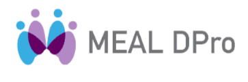
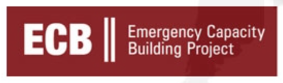

Hazem Afana
linkedin.com/in/hazem-afana-a377b8387
Professional Summary
(Buisness developer intelligence) Results-oriented Project Management Professional with over 16 years of experience bridging large-scale civil engineering. Proactively managed diverse portfolios of construction, shelter, and infrastructure projects. A PMP® certified leader with specialized training in PMD Pro® and Social Good DPro®, demonstrating a deep commitment to the humanitarian sector’s standards of accountability, participation, and sustainable development. Expertise in WASH-related infrastructure, emergency response, and stakeholder engagement in complex environments, including Palestine and the UAE. Dedicated to ensuring project quality, managing risk, and delivering measurable impact for vulnerable populations and marganalized communities.
Core Competencies
Project Life Cycle Management • Risk Analysis & Mitigation • Budget & Schedule Management • Team Leadership & Mentoring • Stakeholder Engagement
Needs Assessment & Analysis • Monitoring, Evaluation & Learning (MEAL) • Accountability & Transparency • Emergency Relief Coordination • Community Participation
Civil Engineering & Site Planning • Data Collection & Analysis • Health & Safety Compliance • Logistics & Supply Chain • Business Intelligence & AI
Professional Certifications
 PMP® (Project Management Professional)
PMP® (Project Management Professional)Project Management Institute (PMI)

MEAL DPro®PM4NGOs
 Social Good DPro®
Social Good DPro®PM4NGOs
 PMD Pro (Project DPro®)
PMD Pro (Project DPro®)PM4NGOs
 Core Humanitarian Essentials (CHE)
Core Humanitarian Essentials (CHE)
(TPM) in WASH emergenciesProfessional Experience
- Spearheaded the Bethlehem Hotel Project (9,737 m² High-Rise), managing all phases from planning to delivery, ensuring alignment with client requirements and international quality standards.
- Oversaw a multi-stakeholder environment, coordinating with local authorities, subcontractors, and international partners.
- Conducted comprehensive risk analysis and implemented mitigation strategies, ensuring project milestones were met on time and within budget.
- Managed the execution of multiple large-scale construction and infrastructure projects, demonstrating robust capability in WASH-related infrastructure (water, sanitation, shelter).
- Kalba Kornich Project (12,000 m²): Led the construction of 16 condominiums, managing a significant budget, site teams, and logistical planning to ensure timely delivery.
- Victoria International School Project (19,000 m²): Coordinated the first phase of construction, effectively managing scope and schedule in a complex, high-stakes project.
- Masid Jaber (500 m²): Oversaw the full project lifecycle, focusing on team performance, quality assurance, and stakeholder reporting.
- Ayed Basheeti St.: 1,000 m asphalt road with infrastructure, funded by Qatar.
- Qalandia 7 Shelters Reconstruction: Funded by Saudi Arabia. Contributed to shelter and infrastructure reconstruction for vulnerable populations, demonstrating commitment to humanitarian standards and community needs.
Education
Bachelor in Civil Engineering
October 6 University, Egypt | 2005 – 2010
Digital Master of MBA in Artificial Intelligence
TAG-GU | 2024 – 2026
Languages
Arabic: Mother Tongue
English: Advanced (Professional Working Proficiency)